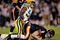
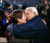

De: La Frikipedia, la enciclopedia extremadamente seria.
De: La Frikipedia, la enciclopedia extremadamente seria. De: La Frikipedia, la enciclopedia extremadamente seria.
Es la conferencia más "Redneck" de todas junto a la AFC Sur, donde todos comen pollo frito con cerveza y tocan el banjo en su tiempo libre (véase Cletus)
Inspirados por los Alumnos de Chuck Norris, de ahí sale el nombre, han sido los peores hasta el 2005 por el culo te la hinco después de recuperar su estadio. Cumming", no se el porque del título pero fue un gran hit musical. Lamentablente no llegaron al Súper Tazón en 2007, al perder contra los Osos Care de Chicago, lo bueno es que casi siempre eligen primero en el Draft de la NFL Miller.
Equipo de Carolina Colorado que les da pereza jugar al furbo ya que pierden con resultados como 38-3, 21-0, 9964-14, etc... por eso le dicen las Panteras de Carolina, porque las panteras juegan mejor que ellos, hasta un andalú, que nunca supo de este deporte puede ganarle. Se fundó en el 2002, juegan el Bank of Latin-America Stadium, que tiene restringida la entrada a los de la "migra". No han ganado nada desde el 2004 por el culo te la saco cuando llegaron al Súper Tazón al perder contra los Patriotas, comandados por Peter Griffin.
Es un equipo que se inspiró en Jack Sparrow para hacer de la ciudad de Tampa un lugar turístico ya que el equipo de béisbol y hockey eran peor que el truño de 2 girls 1 cup. Han ganado un Súper Tazón en el 2000 mierda, ese año no sirve para insultar, cojones! contra los Raiders, con un gol de campo de Martín Matemática Gramática. No es mucha cosa este equipo.
Es el equipo que tenía a una súperestrella que era muy pero muy amigable con los animales (Michael Jackson Vick), pero lo vieron pegándole a su perro pitbull y ahora está 23 meses en la cárcel. Sin Michael, ellos son igual o peor que los Delfines de Miami. El resto de sus jugadores son bartenders, gigolós, actores porno y barberos. Así que tienen que esperar a que Michael salga de prisión (a lo Prison Break, claro está). Su mascota ha sido Chickelito de toda la vida, hasta que estuvo en la pantalla grande.
|  Furbo americano  |
|---|
| AFC Sur | AFC Oeste | NFC Norte | NFC Sur | NFC Oeste | Súper Tazón |
Autor(es):